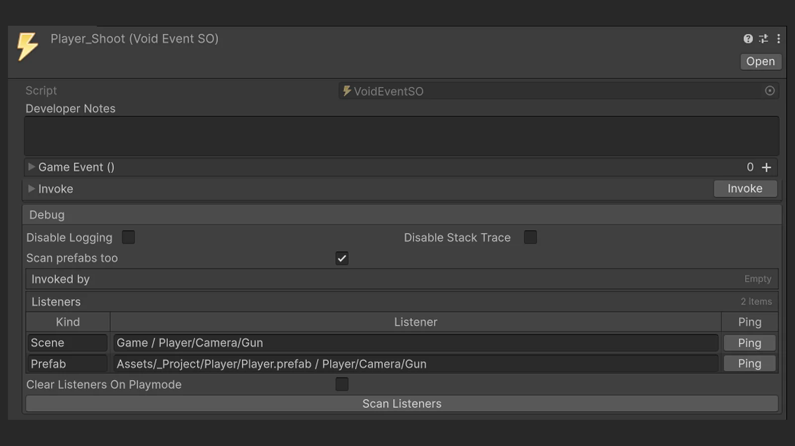
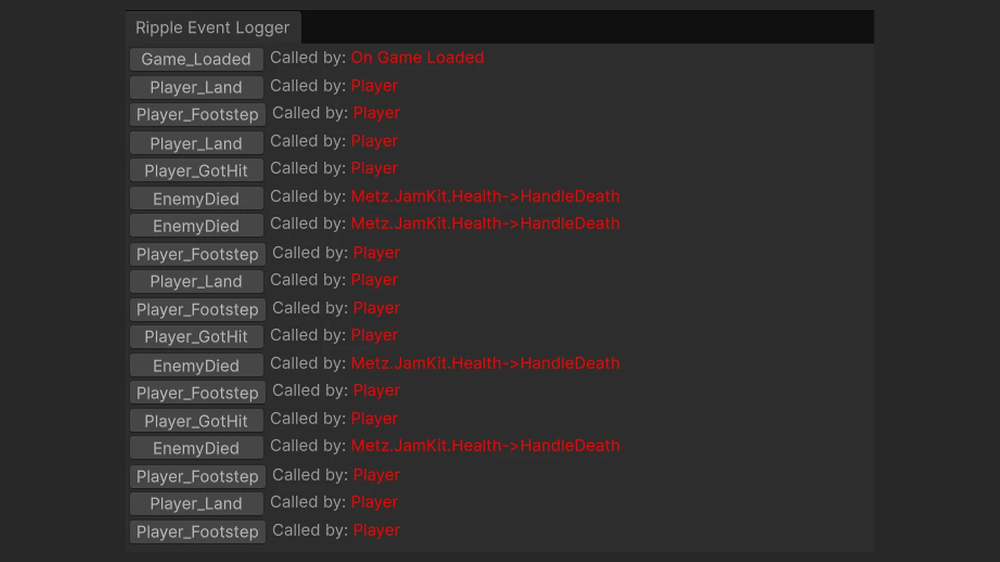
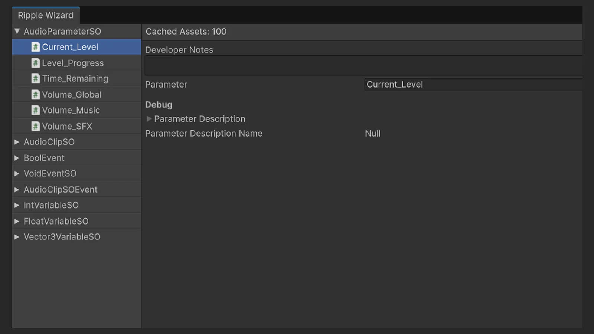

考え方
共有変数、型付きイベント、ランタイムセットはすべてアセットとして扱います。たとえばHPバーはプレイヤーへの参照を持たず、プレイヤーのHPアセットを読むだけ。配線はインスペクターで行い、シーンの読み込み順にも依存しません。
変数はトグル一つでセッションをまたいで保存でき、参照は定数とアセットを切り替えられるので、プロトタイプはシンプルに始めて、後から拡張できます。
// Gameplay code only holds references to assets.
[SerializeField] FloatVariableSO shotsFired;
[SerializeField] BoolVariableSO playerVisible;
[SerializeField] VoidEventSO onTeleport;
void Shoot()
{
// Passing "this" fills the Invoked by table.
shotsFired.SetCurrentValue(
shotsFired.CurrentValue + 1, this);
playerVisible.SetCurrentValue(false);
}デバッグしやすさを前提に設計
このパターンへのよくある不満は、処理の流れが見えなくなること。イベントが発火しても、どこから呼ばれたのか分かりません。Rippleはその答えをインスペクターに直接表示します。プレイ中、すべてのアセットに呼び出し元、回数、値が並びます。
「Scan listeners」はその逆方向。シリアライズされたイベント呼び出し、ランタイムの購読者、すべてのシーンとプレハブのリスナーコンポーネントから、そのアセットに反応するものをすべて見つけます。

Player_ShootでScan listenersを実行すると、シーン内とプレイヤーのプレハブ内の銃が見つかるチーム全員のためのツール
Ripple Wizardはプロジェクト内のすべてのRippleアセットを種類ごとに一覧表示し、一か所で閲覧・編集できます。イベントロガーは発火したイベントを送信元とともに即座に表示するので、プレイテストのバグ報告がずっと追いやすくなります。
診断機能はすべてビルドから除外され、ランタイムはIL2CPPにも対応。リリースしたゲームにツールの負荷は一切残りません。

実際のゲームで使用中
Rippleは自分のゲームの土台として始まり、最近の作品であるRyze、Shroomer、This Side Upのすべてで使われています。
